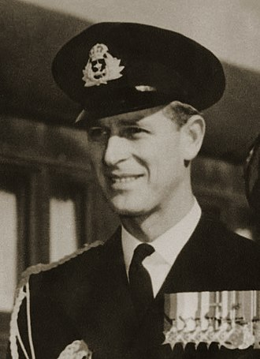
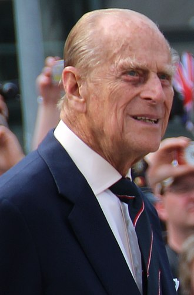
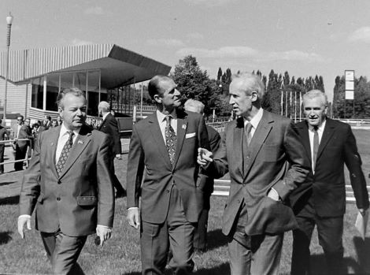

Життєпис
Філіп був п'ятою дитиною та єдиним сином принца Андрія, сина короля Греції Георга I та брата короля Костянтина, який правив того часу. Принц Андрій належав до данського дому Глюксбургів, що правив у Греції, від народження мав титул принца Грецького і Данського (англ. Prince Philip of Greece and Denmark). Його дружина, матір Філіпа, принцеса Аліса належала до роду Баттенбергів, була племінницею російської імператриці Олександри Федорівни. Філіп — правнук данського короля Кристіана IX, праправнук англійської королеви Вікторії і російського імператора Миколи I.
Після того, як 1922 року король Костянтин зрікся престолу, родину принца Андрія видворили з Греції — він з родиною оселився в Парижі. 1928 року Філіпа відправили до родичів у Лондон. У 1933–1935 роках він навчався в школі в Німеччині, потім — у Шотландії. У 1939–1940 роках навчався в Королівському військово-морському коледжі в Дартмуті. Після випуску отримав звання мічмана та пройшов на Військово-морському флоті всю Другу світову війну, наприкінці якої був уже старшим лейтенантом.
У період навчання в коледжі познайомився зі своїми чотириюрідними сестрами, принцесами Єлизаветою і Маргарет, що відвідували навчальний заклад разом із королем Георгом VI. Після цього між Філіпом і Єлизаветою зав'язалося листування, і 1946 року Філіп попросив у короля дозволу одружитися зі спадкоємицею престолу.
Перед укладенням шлюбу прийняв прізвище (Маунтбаттен) (англізовану версію прізвища матері — Баттенберг) і перейшов з грецького православ'я в англіканство[8]. Крім того, він відмовився від титулів «принц Грецький» та «принц Данський» і прийняв британське підданство. Король Георг VI напередодні укладення шлюбу присвоїв майбутньому зятеві титул герцога Единбурзького, графа Меріонетського і барона Гринвіцького.
Одруження Філіпа і Єлизавети відбулося 20 листопада 1947 року. У Філіпа та Єлизавети четверо дітей: Чарльз, принц Уельський (н. 1948), принцеса Анна (н. 1950), принц Ендрю, герцог Йоркський (н. 1960) і принц Едуард, граф Вессекський (н. 1964).
До 1951 року Філіп продовжував службу на флоті. 1952 року, після смерті короля Георга VI і сходження на престол Єлизавети II, став чоловіком панівного монарха, але титул принца-консорта не прийняв. Титул принца (зазвичай присвоюють прямим нащадкам короля) присвоєно Філіпу 1957 року
З 1952 року принц Філіп повністю присвятив себе службі королівській родині, виконуючи численні церемоніальні та благодійні обов'язки. Був покровителем близько 800 організацій. У 1964–1986 роках був президентом Міжнародної федерації кінного спорту, у 1981–1996 роках — Всесвітнього фонду дикої природи. 1973 року першим із членів британської королівської родини відвідав СРСР[9].
Філіп був найстарішим в історії чоловіком панівного британського монарха. 25 лютого 2013 він став найстарішим в історії членом британської королівської сім'ї чоловічої статі (до цього рекорд належав третьому сину королеви Вікторії, принцові Артуру). Під час святкування свого 90-річчя 2011 року принц Філіп заявив про бажання обмежити свої громадські функції.
Помер 9 квітня 2021 року у Віндзорському замку[10]. Незадовго до цього, на початку березня, принцу провели успішну операцію на серці[11]. 17 квітня його поховали у каплиці Святого Георгія у Віндзорському замку[12].
Філіп і Україна
У вересні 1973 року герцог Единбурзький з донькою Анною відвідали Київ для участі принцеси Анни в чемпіонаті Європи з кінного триборства. Для нього була підготовлена резиденція — особняк Полякова на нинішній вул. Грушевського, 22.[13][14]. Під час екскурсії містом королівські особи відвідали Києво-Печерську лавру, а також скуштували українські страви в ресторані «Прага»
